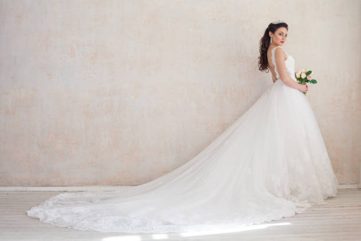
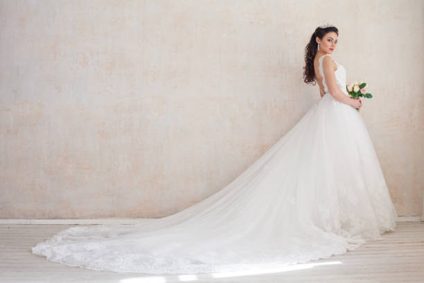

Say Yes To The Dress Bridal Salon®
57 Jeffers Street, Newbridge, Co Kildare

As a most famous source of knowledge in the Bridal Industry, it is Randy Fenoli’s mission to “Educate, Elevate, and Empower” a bride to choose the most important dress in her life and to realise her own personal beauty.
Born in Southern Illinois, Randy is driven by his fascination for design, he taught himself how to sew at the early age of nine and Randy’s passion for fashion and design lead him to the prestigious Fashion Institute of Technology. While at FIT, Randy won several awards for design and achievement. Randy is the recipient of two DEBI awards (Design Excellence in the Bridal Industry), the most prestigious award for bridal designers.
From 2007-2012 Randy worked as Fashion Director at New York’s Kleinfeld Bridal Salon where he would consult with nearly 15,000 brides a year.
With a philosophy that no matter what her size, age or shape, EVERY woman is beautiful, Randy make sure every dress he designs will make a bride feel amazing.
Randy Fenolli has a dress for every size, shape and budget in his collection and we are delighted to be his stockists here at Say yes to the Dress Bridal.
 
